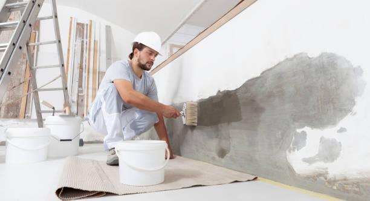

Muskogee Oklahoma
info@hudsonconcretecontractors.xyz
Muskogee Oklahoma
info@hudsonconcretecontractors.xyz

Leading concrete specialists in Muskogee Oklahoma . From foundations to decorative finishes, our skilled team ensures superior quality and long-lasting results. Trust us for all your concrete projects.
Click Here To Call Us (877) 848-1711Looking for top-notch concrete services in Muskogee Oklahoma ? Our concrete company stands as a leader in the industry, offering a full range of services designed to meet your residential and commercial needs. Whether you’re planning a new driveway, a custom patio, or need professional foundation work, we have the expertise and equipment to get the job done right.
We specialize in concrete installations, repairs, and maintenance, ensuring your project is built to last. Our team uses only the highest quality materials and the latest techniques to deliver durable, attractive, and cost-effective solutions. With years of experience serving the Muskogee Oklahoma community, we pride ourselves on providing exceptional customer service and unmatched craftsmanship.
From decorative concrete to large-scale commercial projects, we handle it all with precision and care. Our licensed and insured professionals are committed to delivering results that exceed your expectations. We also offer free consultations to help you plan your project from start to finish.
Choose the best concrete company in Muskogee Oklahoma for your next project. Contact us today to get started and see why we're the preferred choice for concrete services in Muskogee Oklahoma .
Residential & commercial Concrete
Quality services at affordable prices
Immediate 24/ 7 emergency services


Concrete is renowned for its durability and strength, but even the toughest surfaces can develop cracks over time. At Hudson Concrete Contractors, serving Muskogee Oklahoma we understand the frustration that cracks can cause and are here to shed light on the common reasons behind these issues.
Shrinkage During Curing
One of the primary causes of cracks in concrete is shrinkage during the curing process. As concrete dries, it contracts. If the curing process is not managed properly, or if the concrete mix has high water content, this shrinkage can lead to surface cracks. Ensuring adequate curing techniques and proper mix proportions can help minimize these issues.
Temperature Fluctuations
Concrete is sensitive to temperature changes. Rapid fluctuations between hot and cold can cause expansion and contraction, leading to cracks. Extreme temperatures during setting or curing can exacerbate these problems. Implementing temperature control measures and using suitable concrete formulations can mitigate the effects of temperature changes.
Poor Concrete Mix and Compaction
The quality of the concrete mix plays a crucial role in its durability. An improperly mixed concrete or insufficiently compacted mixture can lead to weak spots that are prone to cracking. Using high-quality materials and ensuring proper mixing and compaction are essential for a long-lasting concrete surface.
Settlement and Soil Movement
Concrete slabs can crack due to underlying soil movement or settlement. If the ground beneath the concrete shifts or settles unevenly, it can cause the concrete to crack. Proper site preparation, including soil stabilization and adequate sub-base, helps prevent such issues.
Overloading
Excessive weight or stress placed on concrete surfaces can lead to cracks. Overloading beyond the designed capacity of the concrete can cause structural damage. Adhering to load limits and using reinforced concrete where necessary can prevent this problem.
For expert solutions to prevent and repair concrete cracks in Muskogee Oklahoma trust Hudson Concrete Contractors. Contact us today to ensure your concrete surfaces remain strong and crack-free!
Residential & commercial Concrete
Quality services at affordable prices
Immediate 24/ 7 emergency services
Finding trustworthy cement contractors near you can be challenging. Our team of certified cement contractors in Muskogee Oklahoma brings expertise and reliability right to your doorstep. We specialize in various cement applications, ensuring your projects are completed on time and within budget. With a focus on customer service and quality, we are committed to providing solutions that meet your specific needs while maintaining the highest standards of craftsmanship.

Quality concrete services don't have to break the bank. Our affordable concrete services are designed to provide high-quality solutions at competitive prices. We believe everyone deserves access to professional concrete work, so we offer a wide range of services without sacrificing quality. Whether you need residential or commercial concrete services, our team is here to help you achieve your goals within your budget.

Protecting your concrete surfaces from wear and damage is essential for longevity. Our concrete sealing services involve applying high-quality sealers that enhance the durability of your concrete and prevent moisture, stains, and UV damage. With our professional sealing, you can enjoy a cleaner, more durable surface that maintains its appearance over the years. Count on us to provide exceptional sealing services that safeguard your investment.

Uneven concrete surfaces can be frustrating and hazardous. Our concrete leveling services in Muskogee Oklahoma are designed to restore your surfaces to their original state, eliminating tripping hazards and enhancing the visual appeal. Our skilled technicians use advanced techniques such as mudjacking and poly leveling to correct uneven surfaces effectively. When you choose us, you can expect quality workmanship and a commitment to safety that ensures your property’s integrity.

The foundation is the most crucial element of your structure, and its installation must be executed flawlessly. Our concrete foundation installation services are designed to provide you with a solid base for your home or commercial building. We pay close attention to the design, soil conditions, and building codes to ensure that each foundation is laid correctly and effectively. Our skilled contractors work diligently to bring your project to life, using high-quality concrete that meets or exceeds industry standards. Trust us for a foundation that stands the test of time.
If you’re looking to add vibrant color and style to your concrete surfaces, our concrete staining services in Muskogee Oklahoma are the perfect solution. Staining is an excellent way to enhance the appearance of patios, driveways, and floors, providing a beautiful finish that resembles natural stone. We utilize high-quality stains and expert techniques to achieve stunning results. Choosing us means you receive professional service, creative design options, and a beautiful transformation that will elevate your space.

Among the many concrete construction companies, Concrete stands out due to our dedication to quality and customer satisfaction. Our comprehensive range of services covers everything from residential to commercial concrete applications, catering to every need. We focus on innovative solutions and use the best materials for all our projects, ensuring durability and visual appeal. Our experienced contractors are committed to delivering timely and cost-effective results that meet your expectations. Partner with us for your concrete projects and experience excellence in construction.

For construction projects requiring quick, reliable concrete deliveries, our ready mix concrete delivery services in Muskogee Oklahoma are unparalleled. We provide high-quality, pre-mixed concrete that is perfect for any application, ensuring you get the right mix, right when you need it. Our experienced drivers and logistical planning help you avoid delays on-site, so you can keep your project on track. Trust us for efficient deliveries that ensure your project runs smoothly from start to finish.
Years Experience
Expert Technicians
Satisfied Clients
Compleate Projects
At Painting Vikmanic, we understand that choosing the right painting contractor is essential for enhancing the beauty and value of your property in Muskogee Oklahoma . Our commitment to quality, professionalism, and customer satisfaction sets us apart in the industry.
Why choose us? First, our team of skilled professionals is dedicated to providing top-notch painting services tailored to your unique needs. Whether you’re looking to refresh your home’s interior, boost curb appeal with exterior work, or require specialized finishes, we have the expertise to deliver stunning results.
We utilize only the best materials and techniques, ensuring long-lasting durability and a flawless finish. Our attention to detail guarantees that every project is completed to the highest standards, giving you peace of mind. Furthermore, we prioritize open communication and transparency throughout the process, keeping you informed every step of the way.
As a locally-owned company, we take pride in serving the Muskogee Oklahoma community. Our reputation is built on trust, reliability, and a passion for excellence. We offer free estimates and consultations, making it easy for you to plan your next painting project without any obligation.
Choose Painting Vikmanic for your painting needs in Muskogee Oklahoma , and experience the difference of working with a contractor who truly cares about your vision. Let us bring your ideas to life with vibrant colors and exceptional craftsmanship. Contact us today to get started!
When searching for the best concrete contractors near you, it can be overwhelming to sift through all the local options. At Concrete, we understand that you want reliable, professional, and affordable services. Our team of expert concrete contractors is committed to delivering exceptional quality and customer satisfaction. Whether it’s a new driveway, patio, or commercial project, we have the skills and resources to handle any size job. We pride ourselves on our strong reputation built on trust and quality work, making us the best choice for your concrete needs.
In today's world, ensuring your residential concrete projects are handled by professionals is crucial. Our residential concrete services include everything from driveways and patios to foundations and decorative elements. We pride ourselves on using high-grade materials and the latest techniques to ensure durability and aesthetic appeal. By choosing us, you benefit from our commitment to excellence, timely project completion, and competitive pricing, ensuring that your home's concrete enhancements not only meet but exceed your expectations.
The foundation of any successful commercial venture lies in solid concrete structures. At Concrete, our commercial concrete contractors possess the expertise and experience required to tackle projects of all sizes. From warehouses to retail spaces, our team delivers high-quality concrete solutions designed to meet the specific demands of your business. We prioritize safety, efficiency, and timely project completion, ensuring your commercial space is ready as scheduled. Choose us for your commercial concrete projects, and experience the reliability and professionalism that sets us apart in Muskogee Oklahoma .
A concrete driveway is not just a parking space; it’s an essential component of your home’s first impression. Our concrete driveway installation services are designed to provide you with a durable and attractive entryway to your property. We utilize high-grade materials and expert craftsmanship to ensure that your driveway can withstand heavy loads and harsh weather. Our team takes care of every detail, from the initial excavation to the final finishing touches, ensuring that the installation process is seamless and hassle-free for you. Choose us for your driveway installation needs and enjoy a beautiful, long-lasting solution that enhances your home’s value.
Add value and beauty to your outdoor space with our expert concrete patio installation services. We offer a variety of styles, colors, and finishes to create the perfect patio that suits your lifestyle. Our team works diligently to ensure that every installation is seamless and enhances the overall aesthetic of your backyard. Whether you envision a simple outdoor space or a complex design, we are committed to delivering exceptional results tailored to your style. Choose us for concrete patio installation and let’s create an inviting space for you and your family to enjoy.
Stamped concrete is a stylish and cost-effective way to enhance your outdoor and indoor surfaces. Our stamped concrete services can replicate textures and patterns that resemble natural stone, brick, or even wood, allowing you to get the look you desire without the high cost. Our team is skilled in executing intricate designs that will elevate the aesthetic appeal of your property. Additionally, we ensure that the stamped surfaces are not only visually stunning but also durable and resistant to wear. Make your concrete surfaces a masterpiece by choosing our expert stamped concrete services.
A strong foundation is crucial for the stability of your property. When issues arise, our concrete foundation repair services come into play. Our expert team has the tools and expertise to diagnose and fix a range of foundation issues, from cracks to settling. We emphasize thorough inspections and a tailored approach to address your specific needs. Choosing us ensures that your property will have a solid foundation that eliminates worries about future structural problems.
The durability and flexibility of concrete slabs make them a popular choice for various applications, including basements, patios, and commercial floors. Our concrete slab installation services are designed to provide a solid and level surface that meets your needs. We work closely with you to determine the right thickness and reinforcement for your specific project, ensuring optimal performance over the long term. Our commitment to quality and customer satisfaction makes us the top choice for concrete slab installations.
Transform your outdoor or indoor space with our decorative concrete services that are as beautiful as they are functional. From stamped and stained concrete to overlays and custom designs, we have the creative solutions to enhance your property . Our skilled team combines artistry with technical expertise to execute designs that match your style and vision. Whether it’s for patios, walkways, or flooring, our decorative services add a unique touch to any project. Choose Concrete and elevate your spaces with our stunning decorative concrete options.
If your concrete surfaces are showing wear and tear, our concrete resurfacing services are the ideal solution to restore their beauty and functionality. This cost-effective approach extends the lifespan of your concrete while revitalizing its appearance. We use high-quality resurfacement products that create a smooth finish and are resistant to cracking and peeling. Our team is dedicated to working closely with you to select the best techniques and finishes for your specific needs.
Damaged concrete can lead to safety hazards and detract from your property’s value. Our concrete repair contractors are skilled in identifying and fixing a wide range of issues, from cracks and spalling to significant structural damage. We take a comprehensive approach to each repair project, ensuring that we address the root cause of the problem, not just the symptoms. Our team uses high-quality materials and proven repair techniques, providing you with long-lasting solutions that restore the integrity and appearance of your concrete surfaces. When it comes to concrete repair, trust us to get the job done right.
Maintaining safe and functional sidewalks is essential for both residential and commercial properties. Our sidewalk concrete repair services address issues such as cracks, uneven surfaces, and erosion. We use advanced techniques to repair and level sidewalks, ensuring they are safe for pedestrians and comply with local regulations. Our commitment to affordable pricing and quality workmanship makes us the go-to choice for all your sidewalk repair needs.
Our concrete floor installation services in Muskogee Oklahoma are perfect for those seeking a durable and customizable flooring option. Whether it’s for residential or commercial spaces, concrete floors offer versatility, longevity, and easy maintenance. Our professional installers ensure that every inch of your project is handled with precision, ensuring a smooth and beautiful finish. By choosing us, you can rest assured knowing that we use high-quality materials and advanced methods for all installations.
When replacing or updating your concrete surfaces, effective concrete removal is essential. Our concrete removal services in Muskogee Oklahoma are thorough and efficient, ensuring that all unwanted concrete is safely and completely taken away. Our experienced team is equipped with the right tools and techniques to handle any job, big or small, while minimizing disruption to your property. We prioritize safety, proper disposal, and clean-up, leaving you with a fresh canvas for your new project. Rely on us for all your concrete removal needs, and achieve a hassle-free transition to new surfaces.
Finding a reliable local concrete company can make all the difference in your construction projects. At Concrete, we pride ourselves on being a trusted choice among local concrete companies in Muskogee Oklahoma . Our commitment to quality, affordability, and customer service has made us a preferred contractor for all concrete services. We are deeply rooted in the community and dedicated to providing top-notch services tailored to meet the specific needs of our clients. Partner with us for your next concrete project, and experience the local difference.
When searching for the best concrete contractors look to us for exceptional quality and service. Our team of skilled professionals is dedicated to delivering impeccable concrete solutions tailored to your specific needs. We offer extensive services from decorative applications to structural foundations, ensuring we have the expertise for any project. With competitive pricing, outstanding customer service, and a commitment to excellence, we strive to maintain our reputation as the best in the business.
Concrete pouring is a fundamental aspect of construction that requires skill and precision. Our concrete pouring services are designed to deliver flawless results for any project, from foundations to decorative features. We utilize advanced equipment and techniques to ensure even mixes and proper application, resulting in sturdy and attractive concrete surfaces. Choosing us means choosing a reliable partner dedicated to quality and safety at every step of the pouring process.
Understanding what influences the durability and lifespan of concrete is crucial for homeowners and businesses in Muskogee Oklahoma . At Hudson Concrete Contractors, we are committed to providing insights that help you maximize the longevity of your concrete surfaces.
Mix Quality and Proportions
The quality of the concrete mix is foundational to its durability. Proper ratios of cement, water, and aggregates ensure a strong and resilient surface. Using high-quality materials and adhering to precise mixing proportions can significantly enhance the lifespan of concrete.
Curing and Temperature Control
Proper curing is essential for concrete strength and durability. Curing helps maintain the moisture content required for the chemical reactions in concrete to fully develop. Extreme temperatures can impact the curing process, leading to potential weaknesses. Controlled curing practices and temperature management are vital for ensuring a durable finish.
Site Preparation and Foundation Stability
The stability of the underlying soil and foundation directly affects the concrete’s performance. Proper site preparation, including soil compaction and grading, is necessary to prevent future settlement or shifting. An unstable base can lead to cracks and reduce the overall lifespan of the concrete.
Exposure to Environmental Conditions
Concrete surfaces are subject to environmental factors such as moisture, freeze-thaw cycles, and chemical exposure. Proper sealing and protective measures can help mitigate the impact of these conditions, preventing damage and extending the concrete’s lifespan.
Load and Stress Management
Understanding the expected load and stress on concrete surfaces is crucial. Overloading or structural stress can compromise concrete’s durability. Ensuring the correct thickness, reinforcement, and design based on usage requirements helps maintain the structural integrity of your concrete.
Regular Maintenance and Repairs
Routine maintenance, including cleaning and timely repairs, is essential for preserving concrete durability. Addressing minor issues before they escalate can prevent significant damage and extend the life of your concrete surfaces.
For expert guidance and quality concrete services in Muskogee Oklahoma trust Hudson Concrete Contractors. We provide comprehensive solutions to ensure the durability and longevity of your concrete investments. Contact us today to learn more!
Muskogee (/məˈskoʊɡiː/) is the thirteenth-largest city in Oklahoma and is the county seat of Muskogee County. Home to Bacone College, it lies approximately 48 miles (77 km) southeast of Tulsa. The population of the city was 36,878 as of the 2020 census, a 6.0 percent decrease from 39,223 in 2010.
Yes, we provide concrete sidewalk installation and repair services for residential and commercial properties in Muskogee Oklahoma .
We recommend waiting at least 7 days before driving on a new concrete driveway installed by Hudson Concrete Contractors .
Yes, Hudson Concrete Contractors has the expertise and equipment to manage large commercial and residential concrete projects in Muskogee Oklahoma .
The time frame depends on the project size, but most concrete projects by Hudson Concrete Contractors are completed within 3-7 days .
Hudson Concrete Contractors recommends high-strength, durable concrete mixes designed for heavy traffic and weather resistance for driveways .
Absolutely. Hudson Concrete Contractors has extensive experience managing large-scale commercial concrete projects .
Yes, Hudson Concrete Contractors is fully licensed and insured to provide professional and safe concrete services in Muskogee Oklahoma .
Yes, we offer concrete demolition and removal services for old or damaged concrete .
Concrete is an excellent option for patios due to its durability, low maintenance, and customization options for color and texture.
Yes, we offer concrete resurfacing services in Muskogee Oklahoma to restore old, worn-out surfaces and make them look brand new.
Yes, we use special techniques and additives to pour concrete in cold weather conditions ensuring proper curing.
The best time to pour concrete in Muskogee Oklahoma is during mild weather conditions, typically in spring or fall, but we can work year-round.
Yes, Hudson Concrete Contractors provides residential concrete services such as driveway, patio, and walkway installations in Muskogee Oklahoma .
Yes, Hudson Concrete Contractors provides expert concrete foundation installation for homes and commercial buildings in Muskogee Oklahoma .
A properly installed concrete driveway by Hudson Concrete Contractors can last up to 30 years with proper maintenance in Muskogee Oklahoma .
Proper site preparation, including grading and leveling, is crucial. Hudson Concrete Contractors handles all prep work to ensure a smooth, durable installation .
Yes, we provide professional concrete repair services to fix cracks, spalling, and other damage.
Yes, we offer custom concrete design services, including decorative, stamped, and colored options to match your vision .
Yes, Hudson Concrete Contractors offers free, no-obligation estimates for all concrete projects .
Cement is a key ingredient in concrete. Concrete is a mixture of cement, sand, gravel, and water. Hudson Concrete Contractors uses high-quality concrete for all projects .
The cost of concrete work depends on the project's size and complexity. Hudson Concrete Contractors offers competitive pricing and free estimates in Muskogee Oklahoma .
Yes, we offer durable concrete retaining wall construction for both residential and commercial properties.
Yes, we offer a variety of colored concrete options to enhance the appearance of your patios, driveways, or walkways in Muskogee Oklahoma .
Yes, we provide concrete leveling and repair services in Muskogee Oklahoma to fix uneven or sunken surfaces.
Concrete is low-maintenance but sealing every few years and occasional cleaning can help prolong its life. Hudson Concrete Contractors provides maintenance tips .
Concrete is a sustainable material, especially when recycled. Hudson Concrete Contractors follows environmentally friendly practices .
Yes, we use steel reinforcement (rebar or mesh) in concrete installations to increase strength and durability .
Yes, we specialize in stamped concrete services offering decorative options to mimic stone, brick, or tile.
Hudson Concrete Contractors provides a range of services in Muskogee Oklahoma including driveways, patios, foundations, sidewalks, and decorative concrete installations.
Concrete typically takes around 28 days to fully cure, but it can be walked on within 24-48 hours. Hudson Concrete Contractors advises waiting longer for heavy loads.
Hudson Concrete Contractors did a remarkable job on our new patio in Muskogee Oklahoma . Their attention to detail and quality workmanship were outstanding. We highly recommend them for all concrete projects! — Brian J.
Profession
The concrete services provided by Hudson Concrete Contractors in Muskogee Oklahoma were top-notch. From start to finish, their team was efficient and the quality of their work was impressive. Great job! — Alan S.
Profession
The concrete patio Hudson Concrete Contractors installed in Muskogee Oklahoma looks fantastic. Their team was prompt, courteous, and did an excellent job. We’re very happy with the end result! — Laura W.
Profession
Muskogee OK Concrete Pros
(877) 848-1711
info@hudsonconcretecontractors.xyz
09.00 AM - 09.00 PM
09.00 AM - 12.00 PM